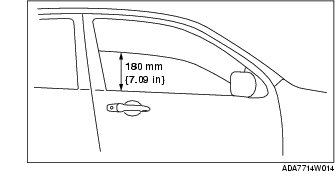

Front door glass removal/installation
1. Operate the front door glass so that the distance from the top of the front door glass to the upper part of the front beltline molding is 180 mm {7.09 in}.

2. Disconnect the negative battery cable.
3. Remove the front door trim.
4. Remove the hole cover.
5. Remove the screws.

6. Lift the front door glass up, then remove it while tilting it in the direction of the arrow.
7. Install in the reverse order of removal.